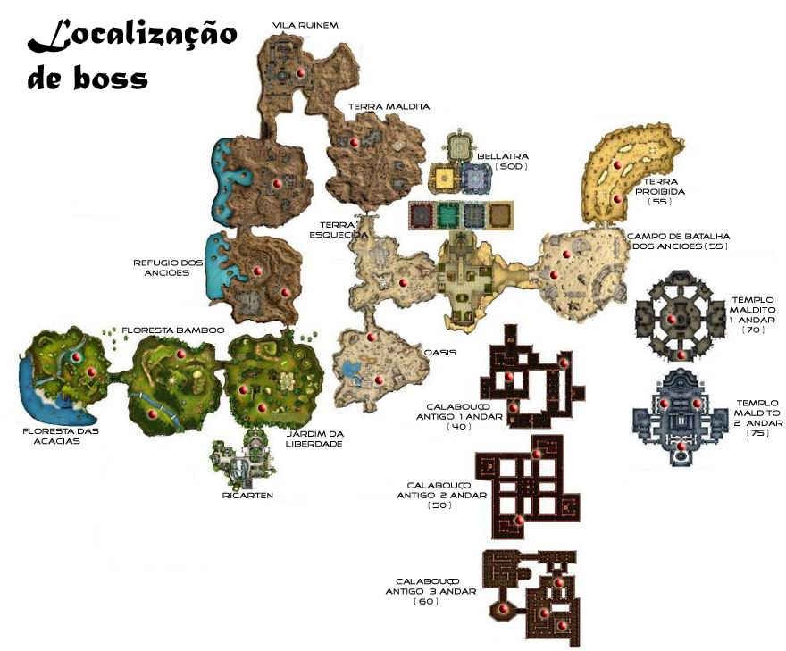

dev4fun
Hey guys, Im doing a MMORPG using Urho3D and im have some doubts about it. My game will have different maps on ur world. Each map its a static model… For start the scene replication, I thought to make a scene on server for each map, this way, player will receive just what its inside on your current map. What I would like to know its:
- That’s its a good way to do scene replication?
- What I should to do if I want the player have the possibility to move between maps? Example: Im on City, and walking I want to go to the hunt/leveling up map
- About above question, what way I could “stream” the neighbor scene/map? Because of the maps should be like a bridge, I want to see where Im going/ another side of bridge
Exemplifying:

Look that all maps are connected, it isn’t a big map, and yes a lot of maps connected each other
I hope that someone can give me a light about it, because I was a bit confused after see the real way that scene replication works…
Thanks.